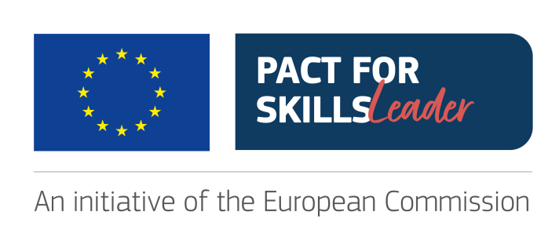
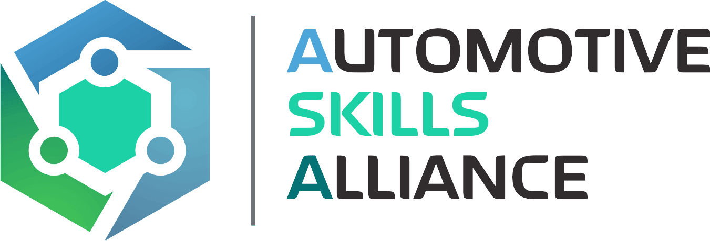
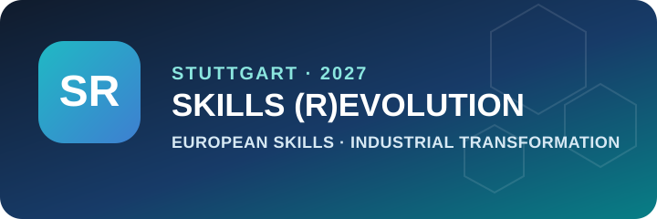

01
European skills sector & strategies
Leading role of the Lab in the European skills sector, including relevant strategies. Two projects from the lab — DRIVES and ECSA — were among 20 selected from the last 20 years of EACEA.

Network & ecosystem
A cross-cutting collaboration activity supporting the lab’s three research areas through European skills networks, industry and engineering communities, international projects, and relevant events.
Network & impact
Strategic collaboration connects European skills strategies and networks, industry and engineering communities, and events on topics from the three lab research areas.
Leading role of the Lab in the European skills sector, including relevant strategies. Two projects from the lab — DRIVES and ECSA — were among 20 selected from the last 20 years of EACEA.

Close collaboration within Union of Skills networks, including Pact for Skills.

Automotive Skills Alliance (ASA) is a large-scale partnership under the Pact for Skills, supporting upskilling and reskilling across the automotive-mobility ecosystem and helping the workforce adapt to the green and digital transition.
SkillsTech Lab is part of the SOQRATES community, a working group of leading automotive and electronics organisations, consultants and research partners exchanging best practices around Automotive SPICE, functional safety, cybersecurity, AI, machine learning and SOTIF.
SkillsTech Lab is part of the EuroSPI² community. EuroSPI² — European Systems, Software, Service, Safety, Security Process and Product Improvement, Innovation, and Infrastructure — connects industry and research through a conference and knowledge-sharing community active since 1994.
Organization of relevant events at European, national and regional level on topics connected to the Lab’s three research areas.
The annual conference brings industry and research together around systems, software and service process improvement, with thematic streams covering AI, functional safety, cybersecurity, quality and innovation.

The Automotive Skills Alliance’s annual flagship event connects industry, education and training, regions, social partners and European institutions. The 2027 edition is planned for 12–13 April at ARENA2036 in Stuttgart.
The project portfolio spans running and finalized projects and more than €35 million in overall project budget.